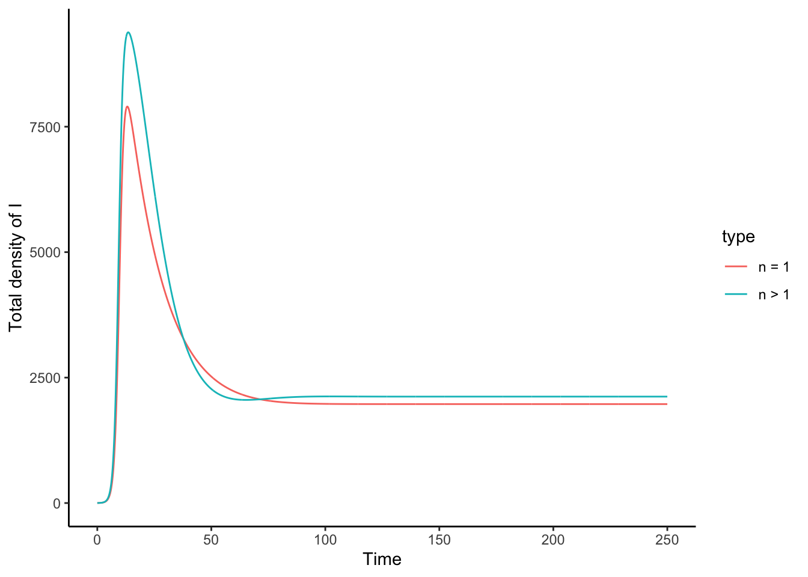
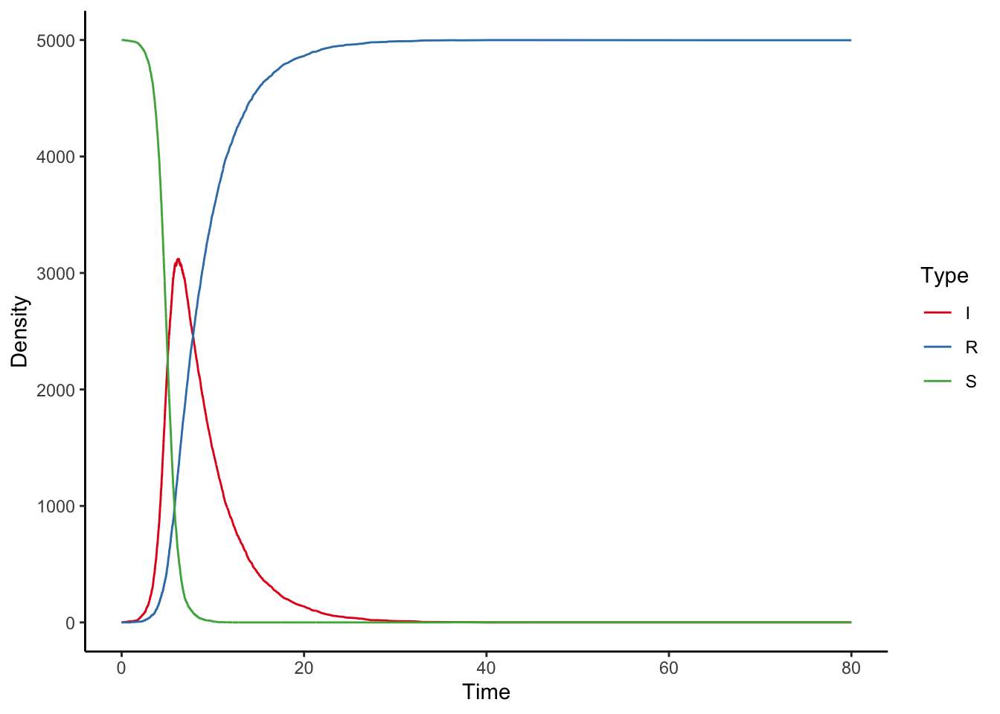
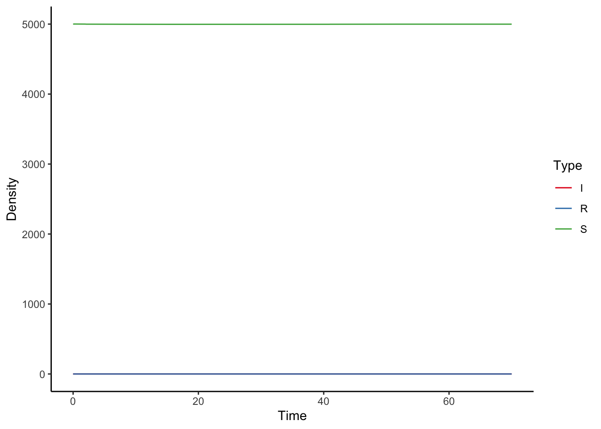
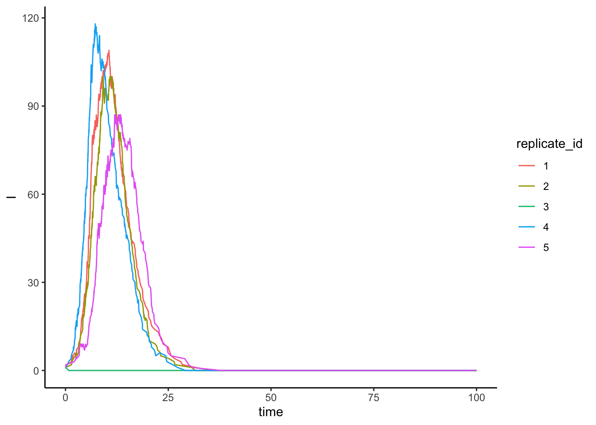
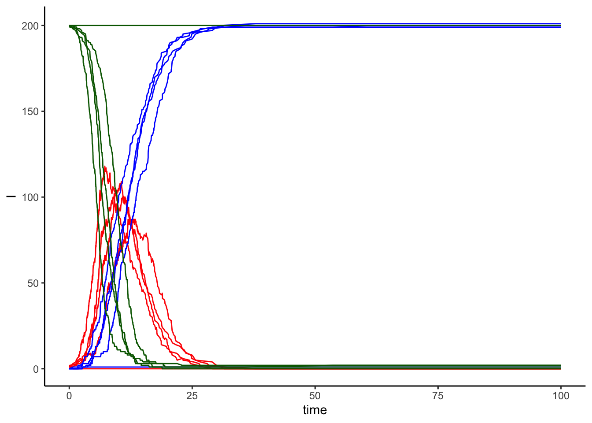

Chapter 3 Practical: probabilistic models in disease evolution
Here we will focus on two applications: 1. A so-called ‘gamma-chain’ model to explore the impact of more realistic recovery distributions. 2. The famous Gillespie Model of Stochastic disease modelling, to track probabilistic changes in densities.
3.1 Gamma chain models
During the lectures, we discussed that more realistic distributions of the recovery time \(\sigma\) may change the spread of the disease onset as well as peak numbers of infected.
Here, we will demonstrate this ourselves by running our own gamma chain model. A key parameter here is \(n\), the number of stages through which an individual has to pass before clearing the disease. This could, for example, reflect the time it takes before the immune system kicks in or before treatment finally starts to work and clear the disease.
3.1.1 Gamma chain model code
## ── Attaching core tidyverse packages ──────────────────────────────────── tidyverse 2.0.0 ──
## ✔ dplyr 1.1.4 ✔ readr 2.1.5
## ✔ forcats 1.0.0 ✔ stringr 1.5.1
## ✔ ggplot2 3.4.4 ✔ tibble 3.2.1
## ✔ lubridate 1.9.3 ✔ tidyr 1.3.1
## ✔ purrr 1.0.2
## ── Conflicts ────────────────────────────────────────────────────── tidyverse_conflicts() ──
## ✖ dplyr::filter() masks stats::filter()
## ✖ dplyr::lag() masks stats::lag()
## ℹ Use the conflicted package (<http://conflicted.r-lib.org/>) to force all conflicts to become errors# incorporate a gamma distribution
# of infection time
# into an SIR model
sir_chain_mod <- function(t, init_densities, parameters)
{
# vector with all the densities
# received via the command line
x <- init_densities
# derive the total population size from
# the sum of the densities
N <- sum(init_densities)
# number of time steps an individual needs
# to undergo before the infection is cleared
n <- parameters["n"]
# we need at least one infected stage
stopifnot(n >= 1)
# some bounds checking
# we expect one density for S and R each
# and n densities for I, making n+2
stopifnot(length(x) == n + 2)
# initial density of S, this is only a single value
S <- x[1]
# initial density of I, because we have now
# different compartments this is a whole
# range of values
I <- x[2:(n + 1)]
# then finally get the fraction of resistant
# individuals from the population density vector
R <- x[n + 2]
with(as.list(parameters), {
total_I <- sum(I)
# dS/dt is just the same as
# it ever was
dS <- mu * N - beta * S * total_I / N - mu * S
# allocate empty space filled
# with zeros for the n dI/dts
dI <- numeric(length = n)
# dI1/dt is a bit special as it receives
# susceptibles whereas dI2/dt etc do not
# hence write dI1/dt outside
# the for loop
dI[1] <- beta * S * total_I / N -
(mu + n * sigma) * I[1]
# evaluate all the the dI_i equations
if (n > 1)
{
for (i in 2:n)
{
dI[i] <- n * sigma * I[i - 1] -
(n * sigma + mu) * I[i]
}
}
# and finally dR/dt
dR <- n * sigma * I[n] - mu * R
result <- c(dS, dI, dR)
return(list(result))
})
} # end sir_chain_mod()
# first define all parameters but n,
# as we will vary n below
parameters <- c(sigma = 1/20, beta = 1, mu = 1/75)
# now make a copy to use for the model
# with one infectious class, in which we specify
# n = 1
parameters.n1 <- c(n = 1, parameters)
# once we have the parameters,
# produce a vector of initial densities
# pay attention to how we initialize I
# there are now n different infected types
# with I1 = 1, all other I = 0 as initial density
initial_densities = c(S = 9999,
I = c(1, numeric(length = parameters.n1["n"]-1)),
R = 0
)
# set the sequence of time points to solve
# the gamma chain ode over
times <- seq(0,250, by =0.1)
# run the model for n = 1
result.n1 <- as.data.frame(ode(y = initial_densities,
times = times,
func = sir_chain_mod,
parms =parameters.n1))
# now run the model for a higher
# number of classes that infecteds
# have to pass through, ie., n > 1
parameters.nhigher <- c(n = 3, parameters)
# again set initial densities
initial_densities = c(S = 9999,
I = c(1, numeric(length = parameters.nhigher["n"]-1)),
R = 0
)
# capture the results of the model
result.nhigher <- as.data.frame(ode(y = initial_densities,
times = times,
func = sir_chain_mod,
parms =parameters.nhigher))
# now we need to get the total number of infecteds
# across all the classes
# we also label the rows of the dataset
result.n1 <- result.n1 %>% mutate(
totalI = result.n1 %>% select(starts_with("I")) %>% rowSums(),
type = "n = 1"
)
# now we need to get the total number of infecteds
# across all the classes
result.nhigher <- result.nhigher %>% mutate(
totalI = result.nhigher %>% select(starts_with("I")) %>% rowSums(),
type = "n > 1"
)
# finally we need to combine both data.frames
# so that we can plot the results
overall.data <- bind_rows(
result.n1 %>% select(c(time, totalI, type)),
result.nhigher %>% select(c(time, totalI, type))
)
ggplot(data = overall.data,
mapping= aes(x = time,
y = totalI)) +
geom_line(mapping = aes(colour=type)) +
ylab("Total density of I") +
xlab("Time") +
theme_classic()
3.1.2 Task: run the gamma chain model
Copy the code above to a clean script window in Rstudio and run it. Can you look the parameters above and find the value of \(R_{0}\) = \(\beta\) / \(\sigma\) ?
Do you see any differences between \(n = 1\) (the classical SIR) and \(n > 1\) (the gamma chain model)?
3.1.3 Task: lower the \(R_{0}\) value in the gamma chain model
Now run the same model again, but for lower values of \(R_{0}\) than previously considered. For example, by setting \(\sigma = 1/4\) while maintaining \(\beta = 1\) (what is \(R_{0}\) now?). You should now see that both lines fluctuate before settling on an equilibrium.
However, what is different about the fluctuations for \(n > 1\) versus \(n = 1\)? Why do you think this is?
3.1.4 Task: increase \(n\)
Now increase \(n\) to, for example, \(n = 10\), so that individuals need to pass through more stages before clearing the disease. Compare your results to the previous task. What has changed?
3.1.5 Extra: trouble arises when one increases \(n\) even further
If you would change \(n\) to even larger values something ‘interesting’ happens, namely that ode()
now often fails to solve the model or gives spurious results.
This happens because the densities of infecteds are
now distributed over so many classes that the per-class
densities of \(I_{i}\) simply become too low to solve for ode(). Slightly more
advanced methods are needed, for example by transforming
the densities to a log scale (e.g., see the code in Bjørnstad 2023, p. 27). Those of you really interested in this, try to change the model code above to
3.2 Working with Gillespie models
Gillespie models are a fantastic way to develop stochastic formulations of ordinary differential equations, including the SIR model.
Their area of application is enormous, from quan
3.2.1 Gillespie model code
Here the code that will be covered during the practical. If you compare this to a deterministic model what do you see?
# SIR model Gillespie
library("tidyverse")
# develops the various rates of the SIR models
# and the resulting changes in density of S, I or R
stoch_eqns <- function(input, params) {
# rows of a data frame are in list()
# format which may give trouble. Hence
# I use unlist()
input <- unlist(input)
# the current value of time
ts <- input[1]
# the initial densities
dens <- input[2:4]
# pre-allocate a
# 6 x 3 matrix reflecting the change in densities of
# S, I or R during one event
density_change_matrix <- matrix(
data=0 # fill it with zeros
,nrow=6 # 6 events hence six rows
,ncol=length(dens))
# allocate a matrix for all the density changes
density_change_matrix <- matrix(data=0,
nrow = 6,
ncol = 3, byrow = T)
# total density at the start
Ntotal <- sum(dens)
# extinction
if (Ntotal <= 0)
{
# return the current time steps and all
# densities set to 0
return(c(ts,numeric(length=length(dens))))
}
# then fill the rates vector
rates <- numeric(length = 6)
# normally we use with() to make
# the parameters named vector into
# variables, but with() is slooooow
lambda = parameters["lambda"]
beta = parameters["beta"]
mu = parameters["mu"]
sigma = parameters["sigma"]
# event 1: birth of susceptible
rates[1] <- lambda * Ntotal
density_change_matrix[1,] <- c(1,0,0)
# event 2: infection of susceptible
rates[2] <- beta * dens[1] * dens[2] / Ntotal # beta * X * Y N, infection
density_change_matrix[2,] <- c(-1,1,0)
# event 3: death of susceptible
rates[3] <- mu * dens[1] # mu X
density_change_matrix[3,] <- c(-1,0,0)
# event 4: loss of infection
rates[4] <- sigma * dens[2] # sigma Y
density_change_matrix[4,] <- c(0,-1,1)
# event 5: death of infected
rates[5] <- mu * dens[2] # mu Y
density_change_matrix[5,] <- c(0,-1,0)
# event 6: death of resistant
rates[6] <- mu * dens[3] # mu Z,
density_change_matrix[6,] <- c(0,0,-1)
# calculate the total rate
sum_rates <- sum(rates)
# random uniformly distributed number
# between 0 and 1
rand1 <- runif(n=1)
# calculate time that nothing happens
ts <- ts -log(rand1) / (sum_rates)
# bounds checking, rates cannot be negative
stopifnot(rates >= 0)
# choose which of 6 events
# each event has its own 'weight' that determines
# how likely it is to be chosen
which_event <- sample(x = 1:6, # a number between 1 and 6
size = 1,
prob = rates # weights given by rates
)
# materialise the actual change in the densities
dens = dens +
density_change_matrix[which_event,]
# in case newly calculated
# densities are negative
# set them to zero
dens[which(dens < 0)] <- 0
# return both the densities and the time that nothing happened
return(c(ts,dens))
} # end stoch eqns
SIR_Gillespie <- function(params,
initial_values,
max_time=100)
{
if (max_time > 1e03)
{
print("Choose max_time to be a smaller value unless you want to wait (very long)")
}
# we may have to go through a large number
# of time steps, but we stop as soon as the
# actual time > max_time
max_steps <- 1e05
# pre-allocate data for the numerical output
# very difficult to predict size needed as
# by chance, some simulations may involve
# more events than others
variables <- as.data.frame(matrix(data =0, # fill with zeros
nrow=max_steps, # max_steps rows
ncol=5))
# give names to the columns
# notice that we have time as the total
# number of events that happened (T)
# and actual time (total number of events
# * time steps in between events) captured
# in the variable time
colnames(variables) <- c("T","time","S","I","R")
# set initial time and initial values
variables[1,] <- c(0, 0, initial_values)
# keep track of the real time that accumulates
# between events
real_time <- 0
# keep track of counter of the number of events
step_idx <- 2
# now iterate the system for max_time steps
while (real_time < max_time)
{
# evaluate the stochastic equations
result <- stoch_eqns(
input=variables[step_idx - 1,2:5],
params = params)
# update the current time
real_time <- result[1]
# update all the variables
# from the stochastic equations
variables[step_idx,] <- c(step_idx, result)
# if all the densities are 0
# then population extinct, quit
if (sum(result[2:length(result)]) <= 0 ||
real_time > max_time)
{
# drop the remainder of the variables
# table as it will be unfilled anyway
variables <- variables[1:step_idx,]
# the final event
# has happened after max_time
# at max_time itself the state of
# the population is the same
# as previous
variables[step_idx,] <- variables[step_idx -1,]
variables[step_idx,"time"] <- max_time
break
}
# increase data.frame size if needed
if (step_idx == nrow(variables))
{
variables <- bind_rows(
variables,
as.data.frame(matrix(data =0, # fill with zeros
nrow=max_steps, # max_steps rows
ncol=5))
)
}
step_idx <- step_idx + 1
} # end for
# drop lines that are empty as we exceeded
# the time we needed to run this for
return(as.data.frame(variables))
} # end SIR_Gillespie
# specify the parameters
parameters <- c(beta = 2, sigma = 0.25, mu = 1e-05, lambda = 1e-05)
initial_values <- c(S = 5000, I = 1, R = 0)
# run the Gillespie model
first_result <- SIR_Gillespie(
params = parameters,
initial_values = initial_values,
max_time = 80)
# our data is current in wide format
# with each row consisting of time, T, S, I and R
# but to plot things easily using ggplot2
# we want things in long format
first_result_l <- first_result %>% pivot_longer(cols = c(S,I,R)
,names_to = "Type"
,values_to = "Density")
# plot the result
ggplot(data=first_result_l,
mapping = aes(x = time, y = Density)) +
geom_line(mapping = aes(colour = Type)) +
theme_classic() +
scale_colour_brewer(palette="Set1") +
xlab("Time") +
xlim(0,80)
3.2.2 Task: running the model
Run the model for a large population size. Start with \(S=5000\), which dependent on the speed of your computer may take a little while.
Without changing the parameters, you may see sometimes see a plot that looks like this: 
You notice that there are no infected individuals! Why do you think this is so? Think about the role of chance effects covered in the lecture.
3.2.3 Task: running the above for small population sizes
Now try the same but then for very small populations, i.e., \(S = 50\). What do you notice about the shapes of the lines? Are they still as smooth as for \(S=5000\). If you run this repeatedly, do you find that the population always gets infected?
3.2.4 Task: running and plotting replicate sims
So far we just ran the same simulation a bunch of times by selecting the same code over and over again, which is slightly tedious. We can also build a for
loop that allows us to obtain multiple results more quickly.
We then combine these results in a big data frame. Note that each simulation run is uniquely numbered, so that we can keep track of which replicate is which when plotting the simulations. Take a look at the code below for 10 replicates:
parameters <- c(beta = 1,sigma=1/5,mu=1e-05,lambda=1e-05)
init_dens <- c(S = 200, I = 1, R = 0)
tmax = 100
# allocate an empty dataframe
# this will contain all the replicate simulations
all_the_simulations <- NULL
# number of replicates
number_replicates <- 5
# use a for loop to gather replicate simulations
for (replicate_sim_idx in 1:number_replicates)
{
# run a single replicate simulation
result <- SIR_Gillespie(params = parameters, initial_values = init_dens,max_time = tmax)
# give this replicate simulation a column
# called replicate_id, so that all rows
# of this particular data set will have
# the same replicate_id
result <- result %>% mutate(
replicate_id = as.character(replicate_sim_idx) # store as text so that it becomes a factor
)
# append the result to the big dataset
all_the_simulations <- bind_rows(
all_the_simulations,result
)
} # end for loop
ggplot(data = all_the_simulations
,mapping = aes(x = time, y = I)) +
geom_line(mapping = aes(
colour = replicate_id)) +
theme_classic()
One can also try to join up all the replicates of S, I and R in one plot, so that it looks like this:

3.2.5 Task: what happens when \(R_{0} < 1\)?
Using the code above, run the simulation for an initial susceptible density of \(S = 100\) and change the value of \(\sigma\) and/or \(\beta\) so that we have an R0 of 0.95 (i.e., the disease is not expected to invade according to all our deterministic models so far).
Try to run 50 replicates.
Do we indeed find that the disease is never able to invade? Discuss why your findings look like this. hint: consider the role of chance effects
3.2.6 Advanced task: systematically vary population size and look at extinction
Warning: running this code can take quite a while We could also vary the population density (by means of varying the initial density of susceptibles \(S\)). We then can study the time it takes for a disease to go extinct in different populations. The code below does exactly this.
Before going ahead and running it, what would you expect? Are diseases more likely to maintain themselves in large versus small populations?
After running the code below, what do you conclude? Would a 10% increase in population density matter dramatically to disease extinction when the current population is already quite large? What about a 10% increase in size of a small population?
parameters <- c(beta = 1,sigma=1/15,mu=1e-05,lambda=1e-05)
tmax = 150
# vary S as this sets the population size
S <- c(20,50,75,500,2000,4000)
# number of replicates
number_replicates <- 5
# allocate data on extinction
data_extinction <- data.frame(
run_id = 1:number_replicates * length(S)
)
# allocate two additional column to put the extinction times in, the value of S
data_extinction[,c("time_extinct","S")] <- c(NA, NA)
run_id <- 1
# use a for loop to gather replicate simulations
for (s_idx in 1:length(S))
{
init_dens <- c(S = S[s_idx],
I = 1, R = 0)
for (replicate_idx in 1:number_replicates)
{
# run a single replicate simulation
result <- SIR_Gillespie(params = parameters, initial_values = init_dens,max_time = tmax)
# we want to find the time that I went extinct
all_times_extinct <- result %>% filter(I == 0) %>% select(time)
if (nrow(all_times_extinct) == 0)
{
time_extinction = tmax
} else {
# find the earliest time that this happend
time_extinction <- min(all_times_extinct)
}
data_extinction[run_id
,c("S","time_extinct")] <- c(S[s_idx],time_extinction)
run_id <- run_id + 1
} # end for replicate idx
} #end for s_idx
ggplot(data = data_extinction,
,mapping = aes(x = S, y = time_extinct)) +
geom_point() +
theme_classic() +
xlab("Population size (init S)") +
ylab("Time until disease extinct")